Building a new design process for Next’s Warehouse Tech team, across nine product sets that support the delivery of up to one million packages a day.
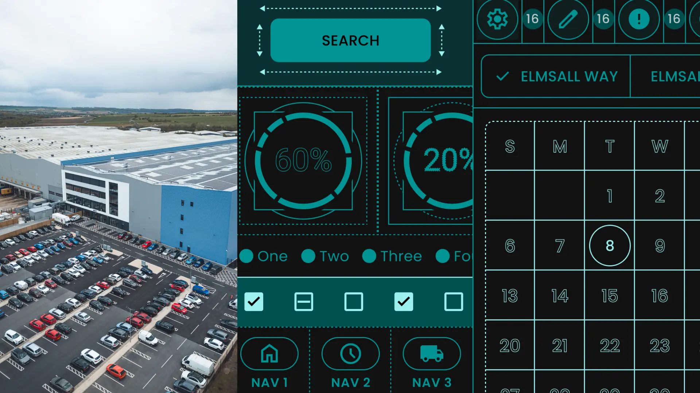
When I joined Next’s Warehouse Tech team, there was no design function, no research practice and no shared design language. Our e-commerce design team offered occasional support, but this was the first full time design role in the department. That made it a really exciting opportunity, with a huge scope of work to match.
We have nine separate dev teams building front ends for different warehouse processes, such as picking, packing and returns. Until then, each team had led the design on its own projects, so there was little consistency from one to the next. My focus has been on opening up clear lines of communication with users, building a design system and tooling into the dev teams’ workflows, and getting us all working in one consistent way.
With internal, process focused applications, design is often seen as a nice to have rather than an essential. It’s easy to say something works: the button gets clicked, the package is confirmed, job done. I’ve put a lot of time into showing that good design improves efficiency as well as user satisfaction.
That meant getting the metrics right in user testing. Can a user complete the task? How long does it take them to learn it? How can we speed the process up? Time on task is a big one, and I’ve worked to show that it isn’t just about reducing clicks, but about making processes genuinely simple.
Next’s distribution centres are vast, busy and increasingly automated. My projects have ranged from making sense of the numbers behind millions of parcels, to designing semi-autonomous applications and working out exactly where the user joins the process.
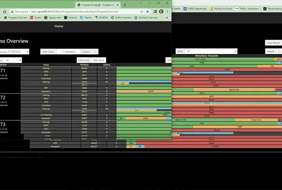
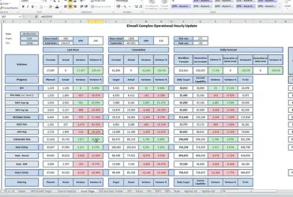
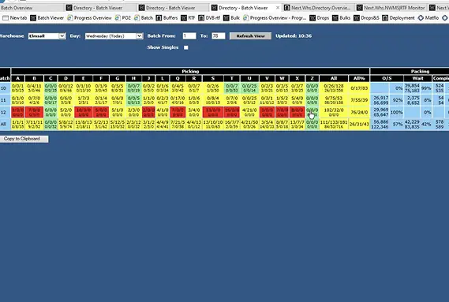
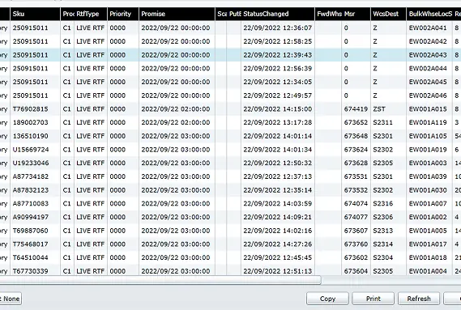
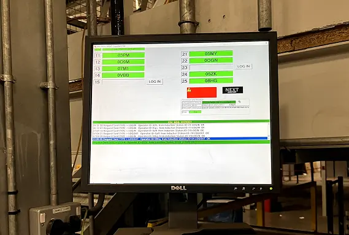
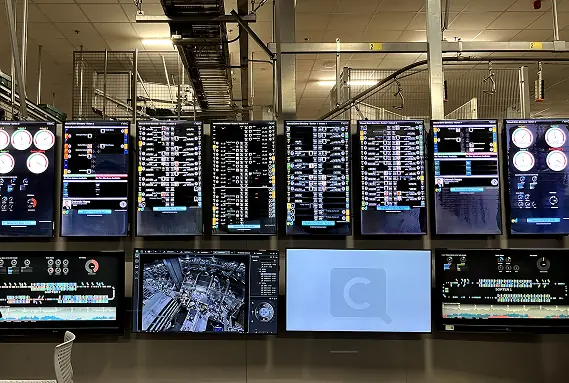
Where we started: legacy tools, spreadsheets, inconsistent views and no design rules
I set up the research practice from scratch: designing the methodology, running 150+ moderated sessions and building insight across every role and operational context. I worked closely with our Research Lead to learn how to facilitate my own sessions, so when we have an idea, we can be testing it the same day and quickly understand its business value and limitations.
Watching how staff actually use tools is especially important. Operational users are domain experts who have spent years running these busy spaces, and the gap between what they describe and what they actually do is often significant. I’ve built a database of users and their roles across the warehouse, so for any new project we know exactly who to talk to.
When I first joined, I was making simple click through prototypes in Figma. Now we lean heavily on AI, moving from Figma Make into Copilot in VS Code to give users realistic prototypes that closely match the final flows and work with large datasets. We get far more clarity on a project before a developer has written a line of code.
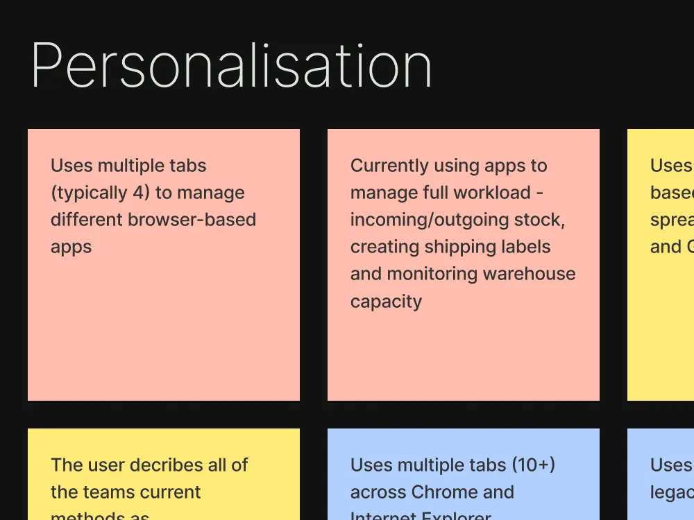
User research synthesis
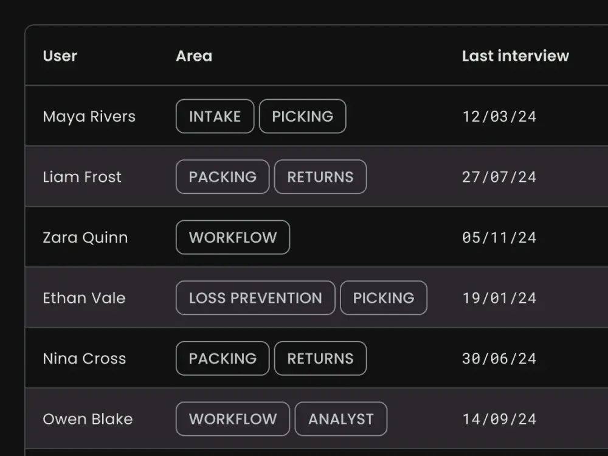
Workflow mapping
A big part of my work has been setting up a new design system, which you can read about in A Design System Built in Code. The same questions kept coming up across teams. How do we show large datasets in a way that makes sense? How do we help users complete tasks quickly and confidently? How do we let them jump between views without losing their place?
Some of this came down to getting the application architecture right. Our management users often have three monitors running at once, so we could split screens across them. On the warehouse floor, people are more likely to be using handsets and touch screens, so they need clear top level information and big touch targets.
I spent a lot of time testing how to improve information hierarchy, letting users drill further into the data only when they need to. We made screens far more visual, with large charts, maps and accessible colours.
The biggest shift during my time here has been the introduction of E3, a large automated facility where staff work alongside the automation rather than doing the manual work themselves. They monitor processes, step in when something needs attention and set the parameters for the system to follow. Designing for that meant thinking carefully about system state, making automated decisions easy to understand, and giving people real control without overwhelming them.
I work closely with developers on handoff. Our teams use different front end frameworks, so I’ve learnt the basics of each, which means I can hand off Figma files knowing they’re feasible. My background in web design has been crucial here. I know what it’s like to build and deploy my own projects, and I’ve added the more formal processes of a large organisation on top.
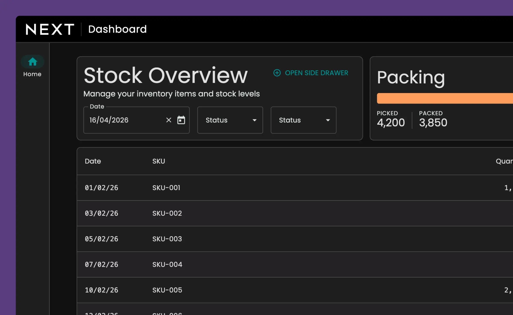
Warehouse management dashboard
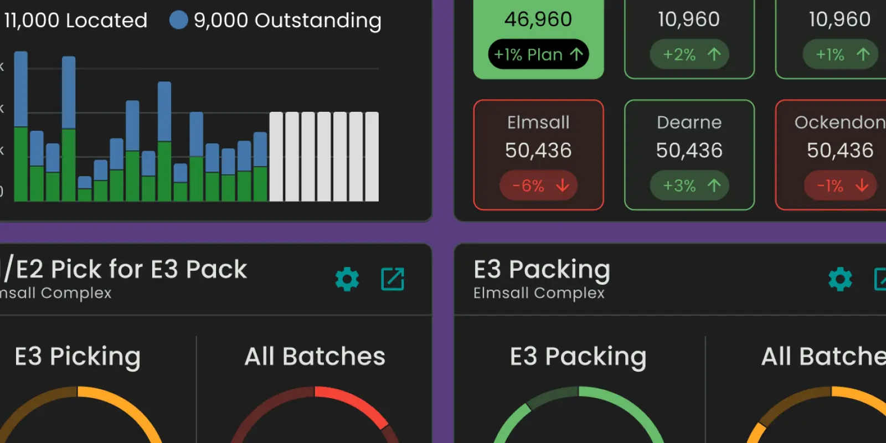
Order detail view
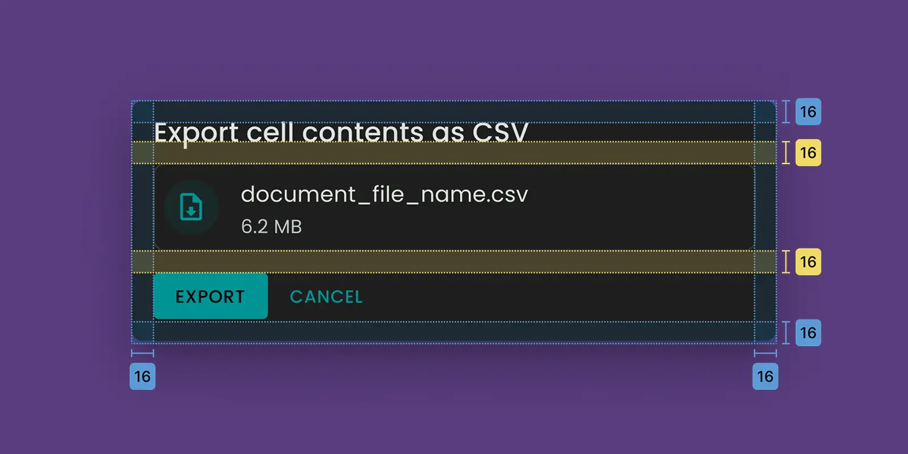
Component library
Before I started, an external report put user satisfaction at 38%. In our benchmarking tests, it’s now 81%. Development has sped up too. With a design function in place, teams are seeing up to a 50% reduction in story estimates, as they no longer design their own screens and can build from ready made component libraries. UX is now an expected part of the process, not an optional extra.
Building a design function from scratch inside a large retailer has taught me that the work is never just the interface. It’s earning trust, creating infrastructure and bringing technical teams with you. Clear communication between business leads, users and developers has been just as important as anything I’ve made in Figma.